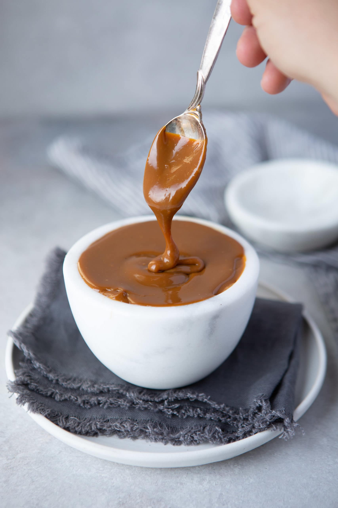
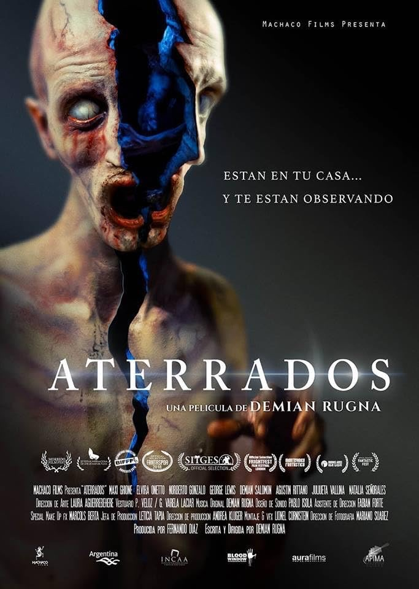

Argentina
Dulce De Leche

Description
Dulce de leche (or milk jam), is produced by the simmering of milk and sugar. It is very popular in Argentina.
Ingredients
- 4 cups whole milk
- 1 pinch baking soda
- 1 and 1/2 cup sugar
- 2 tablespoons water
- 1 teaspoon vanilla extract (optional)
Steps
- Pour two tablespoons of water into the bottom of a saucepan and thoroughly wet the bottom of the pan.
- Pour in the milk, baking soda and sugar.
- Heat on a medium heat, while stirring to dissolve the sugar.
- When it begins to boil, lower the heat and simmer, stirring occasionally for about 45 minutes.
- At this point, the preparation should have thickened.
- Continue cooking, stirring very frequently until the mixture thickens and turns golden brown.
- Stop cooking when the consistency suits you. However, make sure the mixture does not to get too thick as it hardens a little while cooling.
- Pour the jam into a glass jar.
- Dulce de leche can be kept in the refrigerator.
Film Pairings
